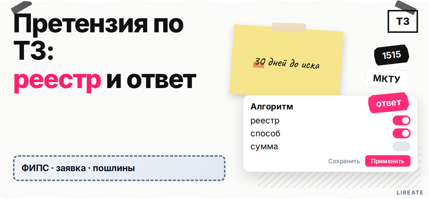
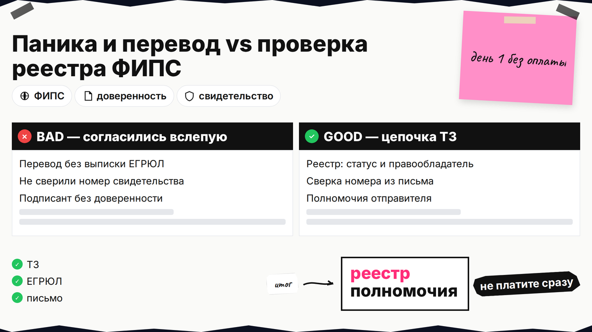
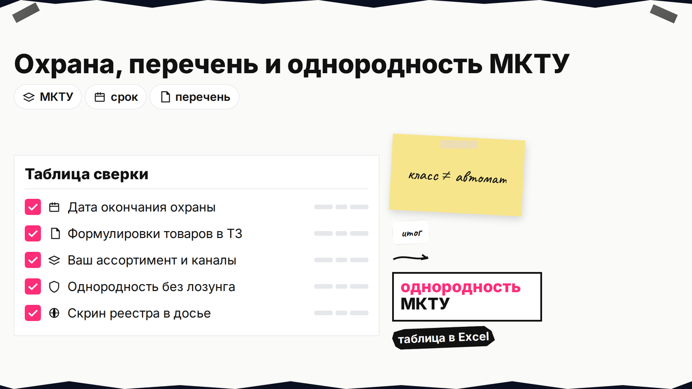
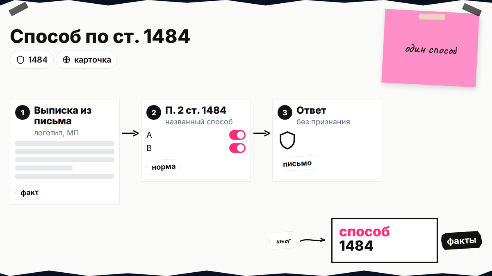

Во входящих - "незаконное использование товарного знака", приложено свидетельство, скрин вашей карточки и расчёт на сотни тысяч рублей. Паника и перевод "чтобы закрыли вопрос" часто фиксируют позицию против вас. Претензия за использование товарного знака - это требование до суда: прекратить способ использования из п. 2 ст. 1484 и иногда выплатить компенсацию по п. 4 ст. 1515. Ниже - проверить реестр, сопоставить перечень МКТУ с вашей деятельностью, разобрать сумму и выбрать формат ответа без необоснованного признания вины. 20.11.2026; не индивидуальная юридическая консультация.

TL;DR / Быстрый инсайт: Универсальный чек любого письма - L75. Здесь только товарный знак: реестр ФИПС / Поисковая платформа → перечень товаров в свидетельстве → однородность и способ использования (ст. 1484) → три метода компенсации (п. 4 ст. 1515) → позиция в письме. Календарь и образец ответа - L02. Контррасчёт и снижение - L76. Иск в арбитраж после 30 дней молчания - п. 5.1 ст. 1252.
Материал для ИП, ООО и селлеров, когда в претензии прямо назван ТЗ, а не "авторское" или патент. Ответственность в предпринимательских спорах наступает независимо от вины (п. 3 ст. 1250), поэтому "мы не знали" редко снимает требование, но помогает оспорить размер и объём использования. Товары с незаконно размещённым знаком - контрафактные (п. 1 ст. 1515); если вы перепродавец, заранее спросите поставщика о праве на обозначение и приложите договор к ответу.

День 1. Сохраните оригинал, приложения и дату получения. Выпишите номер свидетельства и воспроизведённое обозначение. Сверьте отправителя с ЕГРЮЛ. Если пишет представитель - запросите доверенность.
Откройте карточку в Поисковой платформе или реестре ФИПС (поиск по номеру; в строке запроса не используйте звёздочку, вопросительный знак, знаки "больше" и "меньше" и дефис как маску). Проверьте: статус, срок действия, правообладатель, дату приоритета, переходы прав. Открытый набор данных реестра ТЗ на портале Роспатента обновляется ежемесячно - для спорной даты полезно сверить актуальность карточки.
Не уверены, что объект вообще ТЗ? Сначала универсальный чек-лист L75.
Делайте: скрин карточки реестра с датой. Не делайте: удалять спорный элемент на сайте до сохранения доказательств.
Прочитайте конкретные формулировки товаров и услуг в свидетельстве, не только номер класса МКТУ. Суды оценивают однородность по совокупности признаков (назначение, каналы, аудитория) - см. постановление Президиума ВАС № 2979/06 (ГАРАНТ). В деле № А40-19203/2016 (СИП С01-1069/2016) разные классы МКТУ не освобождали от анализа однородности (IPC Magazine).
| Поле в претензии | Что сверить в реестре | Типичная ошибка истца |
|---|---|---|
| Номер свидетельства | Статус "действует" | Ссылка на снятый или переданный знак |
| Класс МКТУ | Полный перечень позиций | Спор только по номеру класса |
| Ваш товар/услуга | Совпадение видов и каналов | Другая аудитория и назначение |
| Сходство знаков | Охраняемое обозначение целиком | Сравнение с общим словом без знака ® |
При закупке оригинала у дилера готовьте документы под исчерпание прав (ст. 1487). Если ваше обозначение зарегистрировано отдельно, приложите своё свидетельство - спор о сходстве тогда сдвигается к сравнению двух охраняемых знаков, а не к "голому" слову.
Дополнительно сопоставьте визуальное сходство и вероятность смешения. Рамка - п. 6 ст. 1483 (сходство до смешения для однородных товаров). Если спорное слово в претензии - только описание вида товара, проверьте, используете ли вы его как бренд или как характеристику (п. 157 ПП ВС № 10).
Делайте: таблицу "их перечень - наш ассортимент" и скрин реестра. Не делайте: ссылаться только на "другой класс МКТУ" без фактов однородности.

По п. 2 ст. 1484 использование - на товаре, упаковке, в работах и услугах, в документации, рекламе, вывесках, в интернете (домен, адресация). Выпишите из претензии конкретный способ: карточка МП, логотип, домен, вывеска.
Если спорят об описательном слове в обычном значении без цели индивидуализации - см. п. 157 ПП ВС № 10. Одно нарушение одним способом - одна база для оценки эпизодов (п. 1.1 ст. 1252).
| Что вменяют | Что приложить к ответу |
|---|---|
| Название магазина на МП | Скрин карточки, договор с площадкой, свой бренд |
| Домен | Кто регистрировал, дата, другие обозначения на сайте |
| Упаковка | Макет, договор с дизайнером, отличия знака |
| Реклама | Креатив, согласование, контекст употребления слова |
Делайте: отвечать по каждому способу отдельным абзацем. Не делайте: признавать "всё использование", если спорят только о вывеске.
Правообладатель выбирает один из трёх методов п. 4 ст. 1515: фиксированная вилка 10 000 – 10 000 000 ₽ (с 04.01.2026), либо 2× стоимость контрафакта, либо 2× стоимость права использования. Попросите расшифровку: метод, количество, цена, период, документы.
Компенсация - не неустойка: ст. 333 ГК к ней не применяется (дело № А51-22505/2012, ВАС 9189/13). Суд вправе снизить заявленное, но не ниже нижнего предела (ВАС 16449/12, ГАРАНТ). Аргументы соразмерности и ходатайства - в L76.
Чек-лист суммы: заявленный метод → документы к расчёту → ваш контррасчёт → оговорка "без признания нарушения" → ссылка на готовность к переговорам
Делайте: указать в ответе, какой метод оспариваете. Не делайте: ссылаться на ст. 333 как на универсальный способ "урезать" претензию по ТЗ.

Разделите в письме требования о прекращении использования и о компенсации. Для пресечения нарушения и изъятия контрафакта обязательная претензия перед иском устроена иначе, чем для денежного требования (п. 1 и п. 5.1 ст. 1252). Вы вправе согласиться снять спорный логотип с сайта, но оспорить сумму - позиции в ответе не противоречат друг другу при корректных формулировках.
Если переговоры не сработали и получен иск о компенсации, подготовьте возражения, контррасчёт по L76 и доказательства по способу использования из этого чек-листа. Общий процессуальный каркас арбитражного спора об ИС - в материале L74 (читайте как ответчику, не как истцу). Только досудебное письмо не гарантирует отзыв требования: правообладатель может остаться при своих доводах.
В проекте ответа укажите исходящий номер, дату, реквизиты сторон и ссылку на входящую претензию. Запросите недостающие документы: доверенность, цепочку прав, протокол фиксации нарушения, детальный расчёт. Добавьте фразу, что письмо не является признанием нарушения исключительного права.
Поставьте в календарь контрольную дату: 30 календарных дней с момента направления вам претензии о компенсации (п. 5.1 ст. 1252). Срок "ответить за 7 дней" из шаблона истца законом для всех не установлен, но затягивать рискованно. Оформление доставки (опись, трек ЭДО, квитанция) храните вместе с копией на email из письма, если он указан.
Делайте: назначить одного ответственного за переписку. Не делайте: сливать претензию в открытый чат.
Делайте: дублировать важные позиции заказным письмом или ЭДО. Не делайте: формулировки "признаём незаконное использование" без согласования с юристом.
Материал проверен: редакция проекта "Лирейт", товарные знаки и досудебные споры.
Достоверность данных: ст. 1483, 1484, 1487, 1252, 1515 ГК РФ, ПП ВС № 10 (п. 157) и практика ВАС/СИП сверены на 20.11.2026 по КонсультантПлюс и ГАРАНТ.
Нет. Оцените охрану, однородность, способ использования и метод расчёта. Платёж до разбора может трактоваться как согласие с требованиями.
Нет. Номер класса не решает спор сам по себе; нужен анализ однородности товаров и услуг (практика СИП по делу А40-19203/2016).
Введите номер в Поисковой платформе или ФИПС и сверьте статус, правообладателя и срок.
Индивидуализация товара, услуги или канала продаж через сходное обозначение при вероятности смешения (п. 3 ст. 1484). Оценивайте конкретную карточку и аудиторию.
Между юрлицами и ИП - после претензии и 30 дней без ответа или после отказа (п. 5.1 ст. 1252), если договор не задаёт иной порядок.
Да, если товар введён в оборот в РФ правообладателем или с его согласия (ст. 1487). Сохраните накладные и договоры поставки.
L02 - сроки, структура письма и образец. Здесь - диагностика по реестру, МКТУ, способу и сумме до выбора позиции.